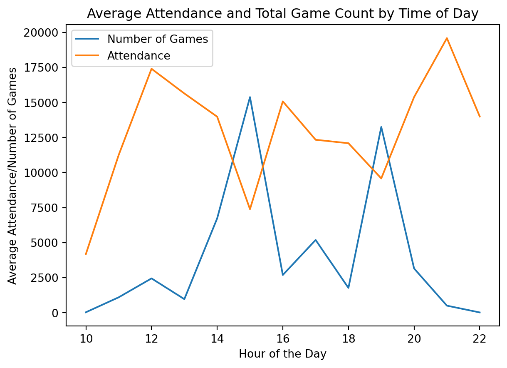

import seaborn as sns
from sklearn.ensemble import RandomForestRegressor
import numpy as np
import matplotlib.pyplot as plt
import pandas as pd
from sklearn.preprocessing import LabelEncoder
from sklearn.model_selection import train_test_split
from sklearn.metrics import mean_squared_error
from sklearn.metrics import accuracy_score, confusion_matrix, classification_report
from sklearn import metrics
from sklearn.linear_model import LinearRegression
import july
from datetime import datetime as dt
from jupyter_dash import JupyterDash
from dash import html, dcc, Input, Output
import plotly.graph_objects as go
from datetime import datetime, time
from re import sub
import re
import plotly.express as px
import pickleWill the Stadium be Buzzing or Silent?
Demand of Attendance for European Football Leagues

Why Attendance Matters
Football (Soccer) is the most popular sport in the world. With an estimated 3.5 billion fans worldwide, it is the most viewed sport in the world (“Sport for Business” 2023). Football being such a popular sport, there is a large business and economy surrounding the sport. Football teams need to be profitable to succeed. But how do these teams make money? Well mainly from 5 different sources being: television money, prize money, player transfers, sponsorships, and matchday revenues(“Football Stadiums” 2023). Out of all of these, one of the most universal is matchday revenues. For many teams, the match day revnue is the lifeblood of the club and what allows the club to survive.
The attendnace of a match significantly affect the match day revenues. So understanding factors and predicting the attendance for a given match is increasingly important. If a club could predict the number of people attending a match, they could be better prepared for an individual match such as if it is expected to have lower attendance than desired by the club, the club could market it differently or have special promotions to increase the attendance for that match.
There are many factors that could impact the attendance of a match. However, the factors used and evaluated here are the day/time of the match, betting odds for a match, and who the away team is for any given match. Additionally, in the end, a random forest model was produced to predict the attendance of matches based on these factors.
Python Packages Used
Data Collection
This project used datat that was collected from two sources: worldfootball.net and Football-data.co.uk. The data that was collected from worldfootball.net was information on the match, such as the names of the teams, the time and date of the match, and most importantly, the attendance for an individual match. This data was scraped from the website. This scrape occurred on January 31st, 2023. The data that was collected from Football-data.co.uk was primarily betting information for each game. This data was already tabulated into CSV files. However, they were divided based on the year and league. All the files were downloaded on February 3rd, 2023.
The data that was collected was between 2010 and 2023. It consisted of leagues from 11 countries England, Scotland, Germany, Italy, Spain, France, Netherlands, Belgium, Portugal, Turkey, and Greece. From these Countries, 21 leagues of data were collected.
Data Processing
Code
betting_data = pd.read_csv('../data/RAWDATA/RAW_betting_data.csv')
match_data = pd.read_csv('../data/RAWDATA/RAW_match_data.csv')
with open('../src/Data_Processing/key_dictionary.pkl', 'rb') as pick:
key_dict = pickle.load(pick)
def snake_case(s):
return '_'.join(
sub('([A-Z][a-z]+)', r' \1',
sub('([A-Z]+)', r' \1',
s.replace('-', ' '))).split()).lower()
betting_data['HomeTeam'] =betting_data['HomeTeam'].apply(str)
betting_data['HomeTeam'] =betting_data['HomeTeam'].apply(snake_case)
betting_data['AwayTeam'] =betting_data['AwayTeam'].apply(str)
betting_data['AwayTeam'] =betting_data['AwayTeam'].apply(snake_case)
betting_data['HomeTeam'] = betting_data['HomeTeam'].replace(key_dict)
betting_data['AwayTeam'] = betting_data['AwayTeam'].replace(key_dict)
match_data['home_team'] =match_data['home_team'].apply(str)
match_data['home_team'] =match_data['home_team'].apply(snake_case)
match_data['away_team'] =match_data['away_team'].apply(str)
match_data['away_team'] =match_data['away_team'].apply(snake_case)
match_data['Hohome_teammeTeam'] = match_data['home_team'].replace(key_dict)
match_data['away_team'] = match_data['away_team'].replace(key_dict)
# betting_data.to_pickle('data/Data_to_change/betting_data_updated_names.pkl')
# match_data.to_pickle('data/Data_to_change/match_data_updated_names.pkl')Code
# match_data = pd.read_pickle('data/Data_to_change/match_data_updated_names.pkl')
# betting_data = pd.read_pickle('data/Data_to_change/betting_data_updated_names.pkl')
# print(match_data)
month_key = {'August': '8', 'September':'9', 'October':'10', 'November': '11','December':'12', 'January':'1', 'February':'2', 'March':'3', 'April':'4', 'May':'5', 'June' : '6', 'July':'7'}
match_data['month']= match_data['month'].replace(month_key)
match_data['date'] = match_data['day_of_month'].astype(str) + "-" + match_data['month'].astype(str) + "-" + match_data['year'].astype(str)
match_data['date'] = pd.to_datetime(match_data['date'])
betting_data['Date'] = pd.to_datetime(betting_data['Date'])
# print(betting_data)
# print(match_data)
# print(betting_data.dtypes)
# print(match_data.dtypes)
# # match_data.to_pickle('data/Data_to_change/match_data_updated_date.pkl')
# # betting_data.to_pickle('data/Data_to_change/betting_data_updated_date.pkl')Code
# # match_data = pd.read_pickle('data/Data_to_change/match_data_updated_date.pkl')
# # betting_data = pd.read_pickle('data/Data_to_change/betting_data_updated_date.pkl')
# print(match_data)
# print(betting_data)
merged_df = pd.merge(match_data, betting_data, left_on = ['date', 'home_team', 'away_team'], right_on = ['Date', 'HomeTeam', 'AwayTeam'], how ='left', indicator=False)
# print(merged_df)Code
# merged_df.to_pickle('data/Data_to_change/betting_and_match_data.pkl')
# merged_df.to_csv('data/Data_to_change/betting_and_match_data.csv')
# data = pd.read_pickle('data/Data_to_change/complete_data.pkl')
data = merged_df
data = data[data['year']<= 2019]
# data.to_pickle('data/Data_to_change/complete_data_before_2019.pkl')
# data.to_csv('data/Data_to_change/complete_data_before_2019.csv')Code
# data = pd.read_pickle('data/Data_to_change/complete_data_before_2019.pkl')
data = data[['home_team','away_team','home_score','away_score','date','time','day_of_week','attendance','Div','FTHG','FTAG','FTR','HTHG','HTAG','HTR','B365H','B365D','B365A','BWH','BWD','BWA','WHH','WHD','WHA','VCH','VCD','VCA','BbMx>2.5','BbAv>2.5','BbMx<2.5','BbAv<2.5']]
# print(data)
# data.to_pickle("data/Data_to_change/complete_data_2010_2019_shrunk.pkl")
# data.to_csv("data/Data_to_change/complete_data_2010_2019_shrunk.csv")
# data = pd.read_pickle('data/Data_to_change/complete_data_2010_2019_shrunk.pkl')
# for col in data.columns:
# print(col)
data = data.rename(columns = {'attendance':'raw_attendance'})
# data['Capacity'] = data['Capacity'].astype(str)
# data.loc[data.url == 'https://www.worldfootball.net/venues/mersin-arena-mersin/', 'Capacity'] = '25534'
# data.loc[data.url == 'https://www.worldfootball.net/venues/stade-paul-lignon-rodez/', 'Capacity'] = '5955'
# df2 = data[data['away_score'].str.contains('\d')]
# print(df2)
# df2.to_csv('src/Data_processing/missing_capicty.csv')Code
data = data[data['raw_attendance'].str.contains('\d')]
data['raw_attendance'] = data['raw_attendance'].astype(float)
# data['Capacity'] = data['Capacity'].astype(float)
def remove_non_numberics(s):
return sub('[^0-9]', '', s)
data['away_score'] = data['away_score'].apply(lambda x: re.sub('[^0-9]', '', x))
# print(df2['Capacity'])
# for index, row in data.iterrows():
# if row['check_raw'] == 'str'
# print(data[['Capacity', 'raw_attendance']])
# print(data[['raw_attendance', 'Capacity']].dtypes)
# data['capacity_filled'] = data['raw_attendance']/data['Capacity']
# data['capacity_filled'] = data['capacity_filled'].round(4)
# Alter Data types:
data= data.rename(columns={ 'Div':'division'})
data['home_score']= data['home_score'].astype(int)
data['away_score'] = data['away_score'].astype(int)
data['date'] = data['date'].astype(str)
# data['time'] = data['time'].apply(lambda x: datetime.strptime(x, '%H:%M'))
data['date_time'] = data.apply(lambda row: pd.to_datetime(str(row['date']) + ' ' + str(row['time'])),axis = 1)
data['raw_attendance']= data['raw_attendance'].astype(int)
# print(data)
# data.to_pickle('data/final_datasets/Total_data.pkl')
# data.to_csv('data/final_datasets/Total_data.csv')Code
# data = pd.read_pickle('data/final_datasets/Total_data.pkl')
season = []
for index, rows in data.iterrows():
match_day = dt.strptime(rows['date'], '%Y-%m-%d')
# print(match_day)
year = int(dt.strftime(match_day, '%Y'))
month_day = dt.strftime(match_day, '%m-%d')
# print(int(year))
# print(type(year))
# print(month_day)
cutoff_date = dt.strftime(dt(2014,7,14), '%m-%d')
if month_day > cutoff_date:
year = year +1
season = season + [year]
else:
season = season + [year]
# def stand_dev(x): return np.std(x)
data['season'] = season
data_std = data.groupby(['home_team', 'season'])['raw_attendance'].std().reset_index()
# print(data_std)
data_std = data_std.rename(columns = {'raw_attendance':'std_attend'})
# print(data_std[data_std['std_attend'].isna()])
data_mean = data.groupby(['home_team', 'season']).mean().reset_index()
data_mean = data_mean[['home_team', 'season', 'raw_attendance']].rename(columns = {'raw_attendance': 'mean_attend'})
data = pd.merge(data, data_mean, on = ['home_team', 'season'])
total_data = pd.merge(data, data_std, on= ['home_team', 'season'])
total_data['standard_attend'] = (total_data['raw_attendance']-total_data['mean_attend'])/ total_data['std_attend']
# data.to_pickle('data/final_datasets/data_standardized.pkl')
# data.to_csv('data/final_datasets/data_standardized.csv')All of the CSV files from Football-data.co.uk were combined together, resulting in two datasets. One with all of the betting data and the other with the attendance. To create one final dataset, the two datasets were to be combined on the home team name, away team name, and the date/time of the game. However, issues arose as they had different naming structures for team names. For example, the team Manchester City in one dataset would be identified as “man_city” and in the other as “manchester_city”. With these differentiating structures and spellings of team names, a list of team names was created for both datasets. These lists were then put through a python script that took a team from one list and compared the characters to values in the other list. This was starting with one entire team name and slowly decreasing its size and observing that through the other team list.
| Itteration | Results |
|---|---|
| 1 | man_city |
| 2 | man_cit, an_city |
| 3 | man_ci, an_cit, n_city |
| 4 | man_c, an_ci, n_cit, _city |

This is an example of how it would split up one team name into a list of smaller strings. It would do this until the team list was broken up into single characters. Then it would start with the largest length of a team name, looking through the other list for any matching character combinations. What resulted is a list of potential matching teams with the team with the most similar name at the top. Then I would determine from the suggestion what was the matching team name. Now that the two data sets had a matching naming of home and away teams, the data sets were able to combine. The resulting data set had 79673 rows and 172 columns, where each row was an individual match.
However, more processing was needed. Although the initial dataset collected data all the way to 2023, the range of the data was filtered to only 2010 to 2019. This was attributed to the COVID-19 pandemic. During the pandemic, attendance basically ceased to occur for matches. Additionally, some leagues canceled the remaining matches for the season. For those reasons, the dataset is focused up until that time.
Certain leagues were removed from the dataset for analysis. The Scottish Division 2 and Division 3 leagues, as well as the Ethniki Katigoria, which is the Greek top league, were removed. This is due to them having several missing values for many variables. Some matches from a variety of leagues had missing values for only betting variables. These matches within leagues were used during the analysis of day/time and the impact of the away team. However, they were dropped from the dataset for analysis of betting data and in the modeling.
Lastly, a few new variables were added. The first variable added was the season the match occurred. Although leagues end on different dates in different years, the date selected for the season to switch was July 14th. Most leagues conclude at the beginning of June and start back at the beginning of August. July is predominantly used for international games. Although there were a couple of matches that occurred in July from 2010-2019, July 14th was the only date with zero matches played. So it was used as the cutoff point.
The other variables were the mean and standard deviation of the home team for that season and the z-score of that individual match. The mean and standard deviation were just used to create the z-score variable. The z-score is the standardization of the match’s attendance in relation to the home team’s average attendance for that particular season.
Final Dataset
The resulting dataset that was used consisted of 53,224 rows and 29 columns. Here is a list of the variables used, as well as their description:
| Variable | Description |
|---|---|
| home_team | Name of Home team for na individual match |
| away_team | Name of Away team for an individual match |
| raw_attendance | Total number of people who attended an individual match |
| division | The league the match took place in |
| B365H | Bet365 home team win odds |
| B365D | Bet 365 draw odds |
| B365A | Bet365 away team win odds |
| BWH | Bet&Win home team win odds |
| BWD | Bet&Win draw odds |
| BWA | Bet&Win away team odds |
| WHH | William Hilll Home win Odds |
| WHD | William Hill Draw odds |
| WHA | William Hill Away win odds |
| VCH | VC Bet Home team win odds |
| VCD | VC bet draw odds |
| VCA | VC Bet away win odds |
| BbAv>2.5 | Bet Brain Average over 2.5 goals |
| BbAV<2.5 | Bet Brain Average under 2.5 goals |
| date_time | Date and time of when a match occured |
| season | The season a match occured |
| mean_attend | Average home team attednace for that season |
| std_attend | Standard deviation of the home team attendance that season |
| Standard_attendance | The z-score of attendance for a match in relation to the home team attednacne that season |
Data Import
# total_data = data
total_data = total_data[['home_team', 'away_team', 'date', 'time',
'day_of_week', 'raw_attendance', 'division', 'FTR',
'B365H', 'B365D', 'B365A', 'BWH', 'BWD', 'BWA',
'WHH', 'WHD', 'WHA', 'VCH', 'VCD', 'VCA', 'BbMx>2.5', 'BbAv>2.5',
'BbMx<2.5', 'BbAv<2.5', 'date_time', 'season', 'mean_attend',
'std_attend', 'standard_attend']]
total_data.head()
total_data.columns
# total_data = pd.read_pickle('../data/final_datasets/data_standardized.pkl')Index(['home_team', 'away_team', 'date', 'time', 'day_of_week',
'raw_attendance', 'division', 'FTR', 'B365H', 'B365D', 'B365A', 'BWH',
'BWD', 'BWA', 'WHH', 'WHD', 'WHA', 'VCH', 'VCD', 'VCA', 'BbMx>2.5',
'BbAv>2.5', 'BbMx<2.5', 'BbAv<2.5', 'date_time', 'season',
'mean_attend', 'std_attend', 'standard_attend'],
dtype='object')Date & Time
The first factor that will be evaluated is the date and time of individual matches. There are multiple attributes to this that will be viewed, from the day of the week, calendar date, and time of the match.
Time Data Processing
time_df = total_data[[
'date', 'time', 'day_of_week', 'date_time', 'raw_attendance', 'standard_attend', 'division'
]]
div_dict = {'D1':'Bundesliga', 'D2': '2. Bundesliga', 'E0':'Premier League', 'E1':'Championship',
'E2':'League 1', 'E3':'Leauge 2','SP1':'La Liga Primera', 'SP2':'La Liga Segunda',
'B1':'Jupiler League', 'F1':'Ligue 1','F2':'Ligue 2','I1':'Serie A','I2':'Seire B',
'SC0':'Scotish Premier League', 'SC1':'Scotish Division 1', 'T1':'Fubol Ligi 1', 'P1': 'Liga 1'}
divisions_list =['D1', 'D2', 'E0', 'E1', 'E2', 'E3', 'SP1' ,'SP2', 'B1', 'F1', 'F2', 'I1', 'I2', 'SC0', 'SC1', 'T1', 'P1']
df_grouped_mean = time_df.groupby('day_of_week')['raw_attendance', 'standard_attend'].mean().reset_index()
df_grouped_median = time_df.groupby('day_of_week')['raw_attendance', 'standard_attend'].median().reset_index()
day_categories = ['Monday', 'Tuesday', 'Wednesday', 'Thursday', 'Friday', 'Saturday', 'Sunday']
df_grouped_median['day_of_week'] = pd.Categorical(df_grouped_median['day_of_week'], categories= day_categories)
df_grouped_median.sort_values(by = 'day_of_week', inplace = True)Day of Week
First, in Figure 1, the average attendance for matches is viewed by the day of the week. What is significant here is that it appears that Wednesday and Sunday have the highest average attendance while Tuesday has the lowest. Wednesday having the highest average attendance is striking. Most would expect matches on the weekdaywould struggle to have high attendance.
Day of the Week Standardized Median
sns.barplot(data=df_grouped_median, x = 'day_of_week', y = 'raw_attendance').set(title ='Median Attendance by Day of Week')
plt.xticks(rotation=90)
plt.xlabel('Day of the Week')
plt.ylabel('Median Attendance')
plt.show()
The Figure 1 graph had Saturday lower than expected average attendance, with Wednesday having the most games attended on average due to the distribution of the number of games seen in Figure 2. Saturday has by far the most amount of games in comparison to any day of the week. This results in Saturday having more lower attend games from lower leagues. This is confirmed by Figure 3. Looking at the number of games by leagues on Saturday, it had most of the lower leagues host matches on Saturday than other days of the week. Wednesday has the second-fewest games played; however, looking again at Figure 3, it was predominantly composed of the top leagues in England, France, and Italy. The top leagues, on average, have greater attended games; hence Wednesday on average has the highest attendance on average.
Day of the Week total Count
grouped_week_count = time_df.groupby('day_of_week').count().reset_index()
grouped_week_count['day_of_week'] = pd.Categorical(grouped_week_count['day_of_week'], categories= day_categories)
grouped_week_count.sort_values(by = 'day_of_week', inplace = True)
sns.barplot(data = grouped_week_count, x = 'day_of_week', y = 'date')
plt.xlabel('Day of the Week')
plt.ylabel('Count')
plt.title('Number of games per day of the Week')
plt.show()
Code
grouped_week_count_division = time_df.groupby(['day_of_week', 'division']).count().reset_index()
grouped_week_count_division['day_of_week'] = pd.Categorical(grouped_week_count_division['day_of_week'], categories= day_categories)
grouped_week_count_division.sort_values(by = 'day_of_week', inplace = True)
grouped_week_count_division = grouped_week_count_division[['day_of_week', 'division', 'date']]
total_div_number = grouped_week_count_division.groupby('day_of_week').sum().reset_index()
# print(total_div_number)
rose_df = pd.merge(grouped_week_count_division, total_div_number, on= 'day_of_week')
rose_df['pct'] = rose_df['date_x']/rose_df['date_y']
# print(rose_df)
rose_df['League'] = rose_df['division']
rose_df = rose_df.replace({'League':div_dict})
rose_df
fig = px.bar_polar(rose_df, theta = 'day_of_week', r = 'pct', color = 'League')
fig.show()Time of Day
Attendance Time of Day
df_grouped_mean_tod= time_df.groupby(time_df['date_time'].dt.hour).mean()
df_grouped_median_tod= time_df.groupby(time_df['date_time'].dt.hour).median()
# sns.lineplot(data = df_grouped_median_tod, x = 'date_time', y = 'raw_attendance', markers = True, marker = "o" )
# plt.title('Attendance by Time of Day')
# plt.xlabel('Hour of the Day')
# plt.ylabel('Attendance')
# plt.show()The time and day of a match resulted in a similar situation as the day of the week. In Figure 4, there were dips in attendance at 3 pm and 9 pm; however, these were also the most attended times for matches. 12 pm and 11 pm matches had the highest attendance on average however had a lower amount of games.
Number of Games Time of Day
df_grouped_count = time_df.groupby(time_df['date_time'].dt.hour).count()
# print(df_grouped_count)
df_grouped_count = df_grouped_count['raw_attendance'].reset_index()
df_grouped_count['count'] = df_grouped_count['raw_attendance']
df_grouped_count = df_grouped_count[['date_time', 'count']]
# df_grouped_count= df_grouped_count.rename(columns = {'date':'count'})
# print(df_grouped_count)
df_count_atted = pd.merge(df_grouped_count, df_grouped_median_tod, on = 'date_time')
# df_count_atted = df_count_atted.drop(columns= ['capacity_filled'])
df_count_atted.rename( columns = {'raw_attendance': 'Attendance', 'count': "Number of Games"}, inplace= True)
# print(df_count_atted)
melted_count_attend = pd.melt(df_count_atted, value_vars=['Number of Games', 'Attendance'], id_vars= 'date_time')
# print(melted_count_attend)
sns.lineplot(data = melted_count_attend, x = 'date_time', y = 'value', hue = 'variable')
plt.title('Attendance and Game Count by Time of Day')
plt.xlabel('Hour of the Day')
plt.show()
Calendar Date
The last aspect of when the match occurred evaluated was what day of the year the match occurred. This is viewing trends during the calendar year to see if there is any insight.
Code
calendar_plot_data = total_data
calendar_plot_data['month_day'] = calendar_plot_data['date_time'].dt.strftime('%m-%d')Trends in Quanity of Matches
Before looking at the attendance, it’s important to look at and view trends in when matches actually occur. In Figure 5, there is a significantly low amount of games played from mid-June to the end of July. This can most likely be attributed to European leagues predominantly being on break during these months in relation to FIFA international break. On this break, players typically return to their national teams to play in international competitions and, every four years, the world cup. Another significant period of time for a number of games is the Christmas holiday. Christmas has one of the lowest total number of games occurring. However, December 26th, or Boxing Day, had the most amount of games played for any day.
Code
date_of_year = calendar_plot_data.groupby('month_day').count()
date_of_year['count'] = date_of_year['standard_attend']
date_of_year = date_of_year['count'].sort_values().reset_index()
# print(date_of_year)
date_of_year['total_date'] = '2024-' + date_of_year['month_day']
date_of_year['total_date']= pd.to_datetime(date_of_year['total_date'], format = "%Y-%m-%d")
events = pd.Series(date_of_year['count'].values.tolist(), index = date_of_year['total_date'].values.tolist())
july.heatmap(dates = date_of_year['total_date'], data = date_of_year['count'], date_label = True, cmap = 'RdYlBu', fontsize =10, weekday_label=False, year_label= False, title = '# of Games per day 2010-2019', colorbar= True, dpi =1200)
plt.show()
Trends in Attedance of matches.
Now looking at the attendance for these matches based on their calendar date, some trends appear. First, there is a grouping of higher-than-average attended matches in May. This can most likely be attributed to the seasons across Europe finishing. In turn, these matches have a higher weight to them due to their ramifications of them. For teams at the top and bottom of the standings, these matches have massive implications for the club. They can result in the team being promoted (moved up a league) or relegated (moved down a league) and having access to European competition. Additionally, with holidays there is an effect on attendance. First, November 6th, which is All Saint’s Day, saw a decrease in attendance on average. Christmas had lower than average attendance, while Boxing Day to New Year’s Eve had greater attendance than what is seen in December and January.
Code
attend_date = calendar_plot_data.groupby('month_day').mean()
attend_date['count'] = attend_date['standard_attend']
attend_date = attend_date['count'].sort_values().reset_index()
attend_date['total_date'] = '2024-' + attend_date['month_day']
attend_date['total_date'] = pd.to_datetime(attend_date['total_date'], format = "%Y-%m-%d")
events = pd.Series(attend_date['count'].values.tolist(), index = attend_date['total_date'].values.tolist())
july.heatmap(dates = attend_date['total_date'], data = attend_date['count'], cmap='RdYlBu', date_label = True, fontsize =10, weekday_label=False, year_label= False, title = 'Avg Attendance per day Standardized 2010-2019', colorbar= True, dpi =1200)
plt.show()
Away Team Impact
The next factor viewed is the impact of the away team. We are looking at how who the away team impacts the attendance of the home team. For this, the standardized attendance was grouped by all the away teams and then averaged. The results can be seen below. You can select what leagues you would like to view and the top number of teams from that league.
Code
away_team_impact = total_data.groupby(['away_team', 'division'])['standard_attend'].mean().reset_index()
# away_team_impact = away_team_impact[away_team_impact['division'].isin(['E3', 'E1', 'E2'])]
div_dict = {'D1':'Bundesliga', 'D2': '2. Bundesliga', 'E0':'Premier League', 'E1':'Championship',
'E2':'League 1', 'E3':'Leauge 2','SP1':'La Liga Primera', 'SP2':'La Liga Segunda',
'B1':'Jupiler League', 'F1':'Ligue 1','F2':'Ligue 2','I1':'Serie A','I2':'Seire B',
'SC0':'Scotish Premier League', 'SC1':'Scotish Division 1', 'T1':'Fubol Ligi 1', 'P1': 'Liga 1'}
divisions_list =['D1', 'D2', 'E0', 'E1', 'E2', 'E3', 'SP1' ,'SP2', 'B1', 'F1', 'F2', 'I1', 'I2', 'SC0', 'SC1', 'T1', 'P1']
away_team_impact = away_team_impact[['away_team', 'division', 'standard_attend']]
# print(away_team_impact)
initial_graph_df = pd.DataFrame(columns = ['away_team', 'division', 'standard_attend'])
for i in divisions_list:
temp_impact_df = away_team_impact[away_team_impact['division'] == i].sort_values('standard_attend',ascending = False).head(3)
initial_graph_df = pd.concat([initial_graph_df, temp_impact_df], axis = 0)
# fig = go.Figure(px.bar(away_team_impact, y= 'away_team', x = 'standard_attend', color = 'division'))
app = JupyterDash(__name__)
app.layout = html.Div(id = 'parent', children = [
html.H1(id = 'H1', children = 'Away Team Impact'),
dcc.Slider(0,20,1, value =3,id = 'slider'),
dcc.Dropdown(id = 'dropdown',
options = [
{'label': 'Bundesliga', 'value':'D1'},
{'label': '2. Bundesliga', 'value':'D2'},
{'label': 'Premier League', 'value':'E0'},
{'label': 'Championship', 'value':'E1'},
{'label': 'League 1', 'value':'E2'},
{'label': 'Leauge 2', 'value':'E3'},
{'label': 'La Liga Primera', 'value':'SP1'},
{'label': 'La Liga Segunda', 'value':'SP2'},
{'label': 'Jupiler League', 'value':'B1'},
{'label': 'Ligue 1', 'value':'F1'},
{'label': 'Ligue 2', 'value':'F2'},
{'label': 'Serie A', 'value':'I1'},
{'label': 'Serie B', 'value':'I2'},
{'label': 'Scotish Premier League', 'value':'SC0'},
{'label': 'Scotish Division 1', 'value':'SC1'},
{'label': 'Fubol Ligi 1', 'value':'T1'},
{'label': 'Liga 1', 'value':'P1'}
], value = ['D1', 'D2', 'E0', 'E1', 'E2', 'E3', 'SP1' ,'SP2', 'B1', 'F1', 'F2', 'I1', 'I2', 'SC0', 'SC1', 'T1', 'P1'],
multi = True),
dcc.Graph(id = 'bar_plot', figure=px.bar(initial_graph_df.replace({'division':div_dict}), x='away_team', y='standard_attend', color='division'))
])
@app.callback(
Output("bar_plot", "figure"),
[Input("dropdown", "value"),
Input('slider', 'value')]
)
def update_graph(drop_value, slider_value):
# print(value)
df = away_team_impact
df = df[df['division'].isin(list(drop_value))]
graph_df = pd.DataFrame(columns = ['away_team', 'division', 'standard_attend'])
for i in drop_value:
temp_impact_df = df[df['division'] == i].sort_values('standard_attend',ascending = False).head(slider_value)
graph_df = pd.concat([graph_df, temp_impact_df], axis = 0)
graph_df = graph_df.reset_index().drop(columns = ['index']).replace({'division':div_dict})
fig = px.bar(graph_df, x= 'away_team', y= 'standard_attend', color = 'division')
return fig
if __name__ == '__main__':
app.run_server(mode='inline')Dash is running on http://127.0.0.1:8050/
Top Teams in the Biggest Leagues
Code
away_team_top_3 = pd.DataFrame(columns = ['away_team', 'division', 'standard_attend'])
for i in divisions_list:
temp_impact_df = away_team_impact[away_team_impact['division'] == i].sort_values('standard_attend',ascending = False).head(3)
away_team_top_3 = pd.concat([away_team_top_3, temp_impact_df], axis = 0)In Figure 7, it views the top 3 teams with the greatest impact on attendance in the top league in Germany, England, Spain, France, and Italy. The teams with the greatest impact on the home team’s attendance are all big-name teams that are globally marketed. They have historical and current success within the league. For instance, in La Liga Primera, the three teams, Real Madrid, FC Barcelona, and Atletico Madrid, are the only teams that have won the league since 2004 (“Sportskeeda” 2023). Similar things can be seen in the other leagues. The teams that have a history of success and currently are succeeding have the greatest impact. Additionally, these teams are the ones globally marketed to the world.
Code
top_league_away = away_team_top_3[away_team_top_3['division'].isin(['E0', 'I1', 'F1', 'SP1', 'D1'])].replace({'division':div_dict})
sns.barplot(data = top_league_away, x = 'standard_attend', y = 'away_team', hue = 'division', dodge = False)
plt.title('Away Teams Impact on Attendance: Top 3 teams per Top League')
plt.xlabel('Mean Attendnace Increase')
plt.ylabel('Away Team')
plt.legend(bbox_to_anchor=(1.05, 1), loc='upper left', borderaxespad=0)
plt.show()
Greatest Away Team Impact - English Leagues
Looking at teams in lower leagues, similar trends appear. Figure 8 shows the lower leagues in England. All of the teams stated here have had historical success. For some of the teams, such as Leeds and Coventry City, the success was in the past. Coventry City was in the top division of English Football from 1967 to 2001, Winning the FA Cup in 1968. Leeds United is an even better example of historic success, winning the first division in the 1968-69, 1973-74, and 1991-92 seasons. Both of these teams have had historical success in their past however have found hard times as performances have declined in the modern era, forcing them to drop leagues. Other teams here, such as Newcastle, West Ham United, and Sunderland, were at the top level of football during this time period. However, got relegated to one or two leagues during that time. However, with that, they still have an increase in attendance. So Teams that have had historical success or recently got relegated from higher leagues are seen to have an impact on the home team’s attendance.
Code
top_england_away = away_team_top_3[away_team_top_3['division'].isin(['E0', 'E1', 'E2', 'E3'])].replace({'division':div_dict})
sns.barplot(data = top_england_away, x = 'standard_attend', y = 'away_team', hue = 'division', dodge = False)
plt.title('Away Teams Impact on Attendance: Top 3 teams per English League')
plt.xlabel('Mean Attendnace Increase')
plt.ylabel('Away Team')
plt.legend(bbox_to_anchor=(1.05, 1), loc='upper left', borderaxespad=0)
plt.show()
Betting Odds
The final factor used in evaluating attendance was the betting odds for an individual match. Betting odds were used as a method to show favorability and predicted results of a match. It shows the current perceived strength of each team.
Comparing Betting Data Sources
The dataset gathered had multiple different sources of betting odds. Some were removed before the final dataset due to too many N/A values, but the betting company’s sources that remained were Bet365, Bet&Win, William Hill, and VC Bet. In viewing the heatmaps seen in Figure 9, there was little difference in how the betting sites predicted and the actual results of the game. Due to this, we assume that all the betting data are comparable. For the remainder of the project, Bet 365 is used because it had one of the fewest numbers of missing values still, and it’s easily available.
Code
bet_dataset = total_data[['raw_attendance', 'division', 'FTR',
'B365H', 'B365D', 'B365A', 'BWH', 'BWD', 'BWA', 'WHH', 'WHD',
'WHA', 'VCH', 'VCD', 'VCA', 'BbMx>2.5', 'BbAv>2.5', 'BbMx<2.5',
'BbAv<2.5']]
b365_conditions = [(bet_dataset['B365H'] < bet_dataset['B365A']) & (bet_dataset['B365H'] < bet_dataset['B365D']),
(bet_dataset['B365A'] < bet_dataset['B365H']) & (bet_dataset['B365A'] < bet_dataset['B365D']),
(bet_dataset['B365D'] < bet_dataset['B365A']) & (bet_dataset['B365D'] < bet_dataset['B365H'])]
b365_vals = ['H', 'A', 'D']
bet_dataset['B365_Result'] = np.select(b365_conditions,b365_vals)
bw_conditions = [(bet_dataset['BWH'] < bet_dataset['BWA']) & (bet_dataset['BWH'] < bet_dataset['BWD']),
(bet_dataset['BWA'] < bet_dataset['BWH']) & (bet_dataset['BWA'] < bet_dataset['BWD']),
(bet_dataset['BWD'] < bet_dataset['BWA']) & (bet_dataset['BWD'] < bet_dataset['BWH'])]
bw_vals = ['H', 'A', 'D']
bet_dataset['BW_Result'] = np.select(bw_conditions,bw_vals)
wh_conditions = [(bet_dataset['WHH'] < bet_dataset['WHA']) & (bet_dataset['WHH'] < bet_dataset['WHD']),
(bet_dataset['WHA'] < bet_dataset['WHH']) & (bet_dataset['WHA'] < bet_dataset['WHD']),
(bet_dataset['WHD'] < bet_dataset['WHA']) & (bet_dataset['WHD'] < bet_dataset['WHH'])]
wh_vals = ['H', 'A', 'D']
bet_dataset['WH_Result'] = np.select(wh_conditions,wh_vals)
vc_conditions = [(bet_dataset['VCH'] < bet_dataset['VCA']) & (bet_dataset['VCH'] < bet_dataset['VCD']),
(bet_dataset['VCA'] < bet_dataset['VCH']) & (bet_dataset['VCA'] < bet_dataset['VCD']),
(bet_dataset['VCD'] < bet_dataset['VCA']) & (bet_dataset['VCD'] < bet_dataset['VCH'])]
vc_vals = ['H', 'A', 'D']
bet_dataset['VC_Result'] = np.select(vc_conditions,vc_vals)Code
def betting_accuracy_vis(name, axis):
b365_data = bet_dataset[[name, 'FTR']].dropna()
# print(b365_data[name].value_counts())
b365_data = b365_data[b365_data[name]!= '0']
b365_data = b365_data.groupby(['FTR',name]).size()
b365_data = b365_data.reset_index(name = 'count')
FTR_result = b365_data[[name,'count']].rename(columns = {'count':'total'})
FTR_result = FTR_result.groupby([name]).sum().reset_index()
# print(FTR_result)
b365_data = pd.merge(b365_data, FTR_result, on =name)
total_count = b365_data['count'].sum()
# print(total_count)
b365_data['pct'] = b365_data['count']/b365_data['total'] *100
# print(b365_data)
b365_data = b365_data.pivot(index = 'FTR', columns = name, values = 'pct')
# print(b365_data)
fig = sns.heatmap(data = b365_data, annot= True, ax = axis)
# plt.title(name + ' Accuracy in predicting Actual Result')
return fig
result_name_list = ['B365_Result', 'BW_Result', 'WH_Result', 'VC_Result']
# for i in result_name_list:
# betting_accuracy_vis(i)
figure, ax = plt.subplots(2,2)
betting_accuracy_vis('B365_Result', ax[0,0])
betting_accuracy_vis('BW_Result', ax[0,1])
betting_accuracy_vis('WH_Result', ax[1,0])
betting_accuracy_vis('VC_Result', ax[1,1])
plt.show()
Betting Odds
The Figure 10 shows what occurs to attendance when the home team is favored to win. Figure 10 is using the entire dataset from 2010 to 2019. What classify in this graph is an increase in attendance for every match; if the standard_attend was positive or equal, it was classified as increasing the attendance in relation to the home team attendance for that season, and if it was negative, decreasing the attendance. The home team favored is using Bet365 odds. If the betting odds of the home team winning was a smaller number than the betting odds for the away team winning, then it was put that the home team was favored. And if the home team betting odds were greeted then the away team betting odds, then it was put as not favored. When the Home team is favored, the games will typically have less than-average attendance for that match. However, if the Home team is not favored, the matches are more likely to have a greater-than-average season attendance for the match. This could demonstrate that fans like to see underdog performances, and if their team is favored, they do not view it as an important match.
Code
bet_data = total_data
bet_data = bet_data.dropna(subset = ['B365H', 'B365A'])
h_fav = []
attend_increase = []
for index, rows in bet_data.iterrows():
if rows['B365H'] < rows['B365A']:
h_fav = h_fav + [True]
else:
h_fav = h_fav + [False]
if rows['standard_attend'] >= 0:
attend_increase = attend_increase + [True]
else:
attend_increase = attend_increase + [False]
# print(h_fav)
bet_increase_bool = bet_data
bet_increase_bool['home_fav'] = h_fav
bet_increase_bool['attend_increase'] = attend_increase
bet_bool = bet_increase_bool[['home_fav', 'attend_increase','raw_attendance']]
bet_bool = bet_bool.groupby(['home_fav', 'attend_increase']).count().reset_index().rename(columns = {'home_fav':'Home Team Favorited', 'attend_increase':'Increase In Attendance'})
# total_matches = sum(bet_bool['raw_attendance'])
# bet_bool['raw_attendance'] = bet_bool['raw_attendance'] *100/total_matches
# print(bet_bool)
# print(total_matches)
count_pct = []
for index, rows in bet_bool.iterrows():
# print('----------')
goals = rows['Home Team Favorited']
# print(goals)
total_count_goals = bet_bool[bet_bool['Home Team Favorited'] == goals]['raw_attendance'].values
total_count_goals = sum(total_count_goals)
# print(total_count_goals)
percent_total = rows['raw_attendance']*100/total_count_goals
# print(percent_total)
count_pct = count_pct + [percent_total]
bet_bool['pcnt_values'] = count_pct
# bet_bool = bet_bool.pivot_table(values = 'pcnt_values', index = 'Home Team Favorited', columns = 'Increase In Attendance')
# print(bet_bool)
# sns.heatmap(bet_bool,annot= True)
sns.barplot(data =bet_bool, x = 'Home Team Favorited', y = 'pcnt_values', hue = 'Increase In Attendance')
plt.gca().invert_xaxis()
# plt.gca().invert_yaxis()
plt.title('Attendance Impact depending if Home Team is Favored')
plt.ylabel('Percent')
plt.show()
Odds of Goals > 2.5
The Figure 11 shows How does attendance change when there are more goals predicted to occur. The odds of goals over 2.5 was created. This graph shows that when the betting odds of over 2.5 goals are smaller than the betting odds of less than 2.5 goals, then the game is favored to have over 2.5 goals scored. The data used to determine this is the columns BbAV >2.5 and BbAV<2.5. What resulted is that when the match is expected to be a higher scoring match, the attendance being greater compared to less than average is even. However, when the match is not favored to have over 2.5 goals scored, the attendance is more likely to be negatively impacted in relation to the season average.
Code
goal_data = total_data.dropna(subset = ['standard_attend', 'BbAv>2.5','BbAv<2.5'])
# print(data)
increase_attend = []
higher_goals = []
for index, rows in goal_data.iterrows():
if rows['standard_attend'] >=0:
increase_attend = increase_attend + [True]
else:
increase_attend = increase_attend + [False]
if rows['BbAv>2.5'] <= rows['BbAv<2.5']:
higher_goals = higher_goals + [True]
else:
higher_goals = higher_goals +[False]
# print(increase_attend)
goal_data['increase_attend'] = increase_attend
goal_data['higher_goals'] = higher_goals
# print(data)
df = goal_data[['higher_goals', 'increase_attend']]
df = df.value_counts().reset_index(name= 'count')
count_pct = []
df_grouped_higher_goal_sum = df.groupby('higher_goals')['count'].sum().reset_index()
# print(df_grouped_higher_goal_sum)
for index, rows in df.iterrows():
# print('----------')
goals = rows['higher_goals']
# print(goals)
total_count_goals = df_grouped_higher_goal_sum[df_grouped_higher_goal_sum['higher_goals'] == goals]['count'].values
total_count_goals = sum(total_count_goals)
# print(total_count_goals)
percent_total = rows['count']*100/total_count_goals
# print(percent_total)
count_pct = count_pct + [percent_total]
df['count_pct'] = count_pct
# total_count = df['count'].sum()
# df['pct'] = df['count']*100/total_count
df = df.rename(columns = {'higher_goals':'Odds of Goals over 2.5 is greater', 'increase_attend': 'Increased Attendance'})
df2 = df.pivot(index = 'Odds of Goals over 2.5 is greater', columns = 'Increased Attendance', values = 'count_pct')
# print(df)
# sns.heatmap(goal_data = df2, annot= True)
# plt.gca().invert_xaxis()
# plt.gca().invert_yaxis()
# plt.title('Predicted Goals in relation to Attendance')
# plt.show()
sns.barplot(data =df, x = 'Odds of Goals over 2.5 is greater', y = 'count_pct', hue = 'Increased Attendance')
plt.gca().invert_xaxis()
plt.ylabel('Percent')
plt.title('Predicted Goals in relation to Attendance')
plt.show()
Modeling
Code
model_dataset = total_data
model_dataset = model_dataset.dropna(subset = ['B365A', 'BWH', 'WHH', 'VCD','BbMx>2.5',
'BbAv>2.5', 'BbMx<2.5', 'BbAv<2.5', 'std_attend', 'standard_attend'])
model_dataset = model_dataset.drop(['date_time'], axis =1)
obj_data = model_dataset.select_dtypes(include=['object']).copy()
column_obj_name = obj_data.columns.values.tolist()
label_encoder = LabelEncoder()
for obj in column_obj_name:
model_dataset[obj] = label_encoder.fit_transform(model_dataset[obj])
model_dataset = model_dataset.astype(float)
model_dataset = model_dataset.dropna()
x = model_dataset.drop(['raw_attendance', 'standard_attend'], axis = 1)
x = x[['home_team', 'away_team', 'division', 'date', 'time', 'day_of_week','B365H', 'B365D',
'B365A']]
y = model_dataset['raw_attendance']
x_train, x_test, y_train, y_test = train_test_split(x,y, test_size = .2, random_state = 11)
# ------------------------------------------------------------------------------------------------------------------------------------------------
# Random Forest
# The Random Forest Model was Performed outside the file and will be imported into the document.
# ------------------------------------------------------------------------------------------------------------------------------------------------
random_forest_model = RandomForestRegressor(n_estimators = 1000, random_state= 23)
random_forest_model.fit(x_train, y_train)
# ------------------------------------------------------------------------------------------------------------------------------------------------
# load_random_forest_model = pickle.load(open('../src/Modeling/Random_forest_model.sav', 'rb'))RandomForestRegressor(n_estimators=1000, random_state=23)In a Jupyter environment, please rerun this cell to show the HTML representation or trust the notebook.
On GitHub, the HTML representation is unable to render, please try loading this page with nbviewer.org.
RandomForestRegressor(n_estimators=1000, random_state=23)
Code
y_predict = random_forest_model.predict(x_test)Code
mae = metrics.mean_absolute_error(y_test, y_predict)
mse = metrics.mean_squared_error(y_test, y_predict)
mape = metrics.mean_absolute_percentage_error(y_test, y_predict)
r2 = metrics.r2_score(y_test, y_predict)| Metric | Score |
|---|---|
| Mean Absolue Error | python mae |
| Mean Squared Error | \({mse}\) |
| Mean Absolute Percentage Error | \({mape}\) |
| r^2 score | \({r2}\) |
References
“Football Stadiums.” 2023. 2023. https://www.football-stadiums.co.uk/articles/how-do-football-clubs-make-money/.
“Sport for Business.” 2023. 2023. https://sportforbusiness.com/the-worlds-most-watched-sports/.
“Sportskeeda.” 2023. 2023. https://www.sportskeeda.com/football/la-liga-winners.